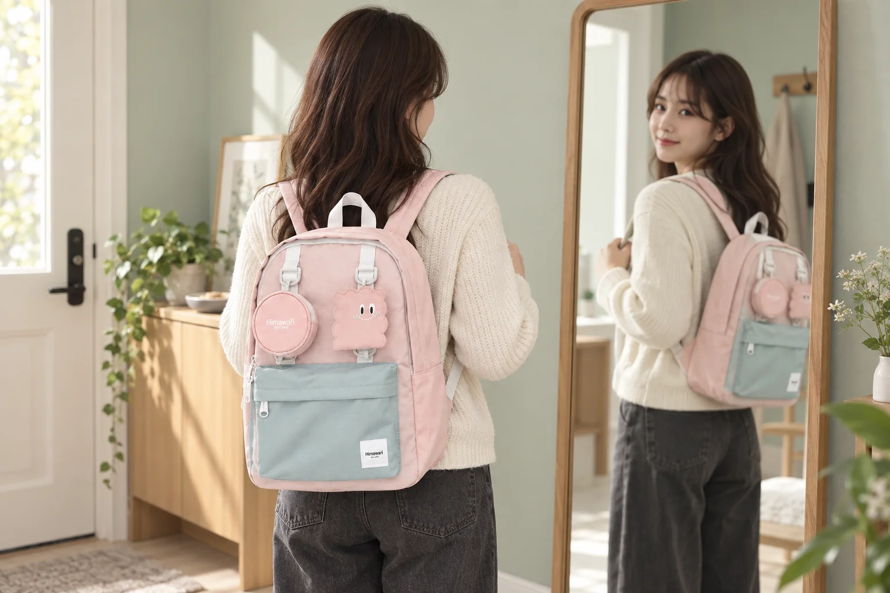

체구와 백팩 비율은 평소 짐을 넣고 본다

체구에 어울리는 가방을 찾을 때에는 작은 크기라는 말이 먼저 떠오릅니다. 실제 선택에서는 같은 키라도 평소 짐과 어깨 주변의 모습, 원하는 사용 장면이 다를 수 있습니다. 제품 숫자로 외형 규모를 읽은 뒤 자신의 물건과 실제 착용을 연결하면 비교할 항목이 구체적입니다. 지금 사용하는 가방에서 무엇이 괜찮고 무엇을 바꾸고 싶은지부터 나누어 봅니다.
현재 가방에서 바꿀 한 부분
잘 쓰는 가방의 바깥 길이와 폭을 개인 기준으로 남길 수 있습니다. 높이는 괜찮았는데 앞뒤로 부풀어 보였는지, 너비 때문에 좁은 자리에서 움직이기 불편했는지 실제 장면을 적습니다. 모든 수치를 한꺼번에 줄이면 필요한 물건이 들어갈지 다른 질문이 생깁니다. 바꾸고 싶은 항목을 정한 뒤 후보의 같은 방향 수치와 비교하면 어떤 차이를 확인할지 알 수 있습니다.
측정할 때에는 가로·세로·앞뒤 폭의 이름을 붙이고 어떤 상태에서 잰 것인지 남깁니다. 빈 가방과 평소 짐을 넣은 모습은 다를 수 있습니다. 후보의 공식 외부 치수와 개인 측정값이 같은 방식이라고 단정하지 않고 비교의 단서로 둡니다. 실제 제품에서 다시 확인할 수 있는 질문을 만드는 데 쓸 수 있습니다. 숫자가 같더라도 곡선과 바닥, 여밈 형태에 따라 보이는 인상은 달라질 수 있습니다.
높이를 가늠하려고 비슷한 길이의 종이를 활용할 수는 있습니다. 이때 얻는 것은 외형 규모의 참고입니다. 종이의 길이만으로 실제 가방의 착용이나 내용물 배치를 확인한 것으로 생각하지 않습니다. 거울에서 어느 방향의 비율을 더 보고 싶은지 정하고 실제 제품을 확인할 때 같은 부분을 살펴봅니다. 후보를 줄이는 과정과 착용 판단을 나누어두면 온라인 비교에서 얻을 수 있는 범위가 분명합니다.
평소 짐은 크기 선택의 조건
매일 필요한 큰 소지품부터 적습니다. 기기나 파일은 사용하는 보호재를 포함한 실제 모습으로 봅니다. 가방을 작게 보이게 하려고 필요한 물건을 눌러 담으면 꺼내는 동작과 여밈도 달라질 수 있습니다. 들어가는지에 이어 정상적인 형태로 닫히는지 확인합니다. 반대로 큰 후보를 골랐을 때에도 남는 공간에서 소품이 어디에 놓일지 정해야 합니다. 필요한 짐과 원하는 외형을 함께 비교할 수 있습니다.
옆면에서 보이는 폭은 내용물을 넣은 뒤 살펴봅니다. 사진의 납작한 모습과 같은 형태가 유지될 것이라고 기대하지 않고 실제 묶음에서 앞뒤 모양을 봅니다. 불필요한 소품을 빼고 필요한 것만 넣는 준비는 할 수 있지만 원하는 외형을 만들기 위해 필수품을 억지로 제외할 필요는 없습니다. 어느 물건 때문에 형태가 달라졌는지 읽으면 후보를 바꿀지 배치를 조정할지 판단할 질문이 생깁니다.
Himawari No.0422의 외부 크기는 30 × 40 × 15cm로 안내되어 있습니다. 체구와 비율을 비교할 때에는 이 숫자로 바깥 규모를 읽고, 실제 물건을 넣는 공간과 착용 상태는 따로 확인합니다. 세트 옵션에 별도 부품이 있다면 어떤 구성이 포함되는지 현재 판매 안내를 봅니다. 선택한 옵션의 제품과 자신의 사용 조건이 같은 비교 안에 있어야 후보를 고르는 이유가 분명해집니다.

메고 움직이는 상태로 살펴본다
실제 제품을 확인할 수 있으면 평소 사용할 구성으로 준비하고 제품 안내에 맞춰 착용합니다. 조절 가능한 부품이 있다면 안내에서 허용한 방식으로 정리합니다. 한쪽으로 기울어 보이는지, 걸을 때 어떤 부분이 몸이나 옷과 만나는지 봅니다. 외형을 맞추기 위해 부품을 임의로 고정하지 않습니다. 서 있는 사진과 움직이는 동안 느끼는 상태를 각각 읽으면 다른 기준을 나누어 판단할 수 있습니다.
두꺼운 겉옷을 입는 계절에도 사용할 계획이라면 그 옷과의 관계를 확인합니다. 얇은 옷에서 본 위치가 그대로 유지된다고 가정하지 않습니다. 끈과 옷의 접촉, 메고 벗는 동작을 다시 볼 수 있습니다. 특정 높이나 조절값이 모두에게 정답이라고 제시하기보다 자기 제품 안내 안에서 현재 상태를 살펴봅니다. 불편한 느낌이 생기면 짐과 착용 구성을 확인하고 필요한 안내를 더 읽을 수 있습니다.
정면뿐 아니라 옆면과 뒷면을 보면 어느 항목을 바꾸고 싶었는지 대조할 수 있습니다. 시선을 맞추려고 가방을 비우거나 사진 각도만 바꾸는 대신 실제 사용하는 상태를 유지합니다. 현재 편한 가방과 후보를 나란히 생각할 때에도 같은 짐과 사용 장면을 기준으로 비교할 수 있습니다. 원하는 외형과 필요한 기능 가운데 아직 답이 없는 항목이 무엇인지 기록하면 됩니다.
온라인 사진에서는 후보의 질문을 만든다
착용 사진의 모델 키만으로 자신의 모습과 같은 비율이라고 판단하지 않습니다. 공식 옵션과 외부 수치, 다른 방향의 제품 사진을 함께 읽습니다. 보이지 않는 내부 치수나 조절 범위는 문의할 항목으로 둡니다. 상품 이름에 작은 체구를 위한 표현이 있다고 실제 적합성이 확인된 것으로 보지 않고, 자신이 준비한 물건과 현재 가방의 기준을 연결합니다.
후보를 줄였으면 가장 중요했던 질문부터 다시 읽습니다. 현재 가방보다 어느 방향을 바꾸려 했는지, 평소 물건이 정상적으로 들어가는지, 실제 착용을 어떻게 확인할지 남아 있어야 합니다. 키에 맞춘 일괄 크기 기준보다 자신의 사용 장면에 답하는 비교가 됩니다. 받아 본 뒤에는 선택한 모델과 옵션을 확인하고 실제 사용 전에 안내에 맞춰 필요한 점검을 이어갑니다.